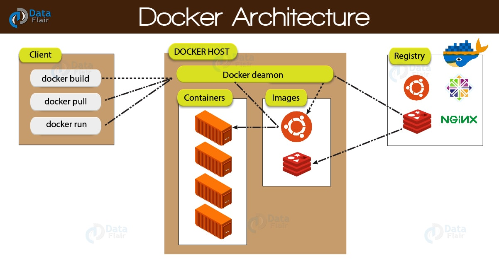

Introduction
Docker is an application that simplifies the process of managing application processes in
containers. Containers let you run your applications in resource-isolated processes. They’re
similar to virtual machines, but containers are more portable, more resource-friendly, and more
dependent on the host operating system.
In this tutorial, We'll learn basics of Docker.
How Docker works
Docker’s Workflow
First, let us look take a look at Docker Engine and its components so we have a basic idea of
how the system works. Docker Engine allows you to develop, assemble, ship, and run applications
using the following components:
1. Docker Daemon: A persistent background process that manages Docker images, containers,
networks, and storage volumes. The Docker daemon constantly listens for Docker API requests and
processes them.
2. Docker Engine REST API: An API is used by applications to interact with the Docker
daemon. It can be accessed by an HTTP client.
3. Docker CLI: A command-line interface client for interacting with the Docker daemon. It
significantly simplifies how you manage container instances and is one of the key reasons why
developers love using Docker.
At first, Docker client talks to the Docker daemon, which performs the heavy lifting of the building, running, as well as distributing our Docker containers. Fundamentally, both the Docker client and daemon can run on the same system. We can also connect a Docker client to a remote Docker daemon. In addition, by using a REST API, the Docker client and daemon, communicate, over UNIX sockets or a network interface.
Using the Docker Command
Using docker consists of passing it a chain of options and commands followed by arguments. The
syntax takes this form:
$ docker [option] [command] [arguments]
To view all available subcommands, type:
docker
As of Docker 19, the complete list of available subcommands includes:
To view the options available to a specific command, type:
$ docker docker-subcommand --help
To view system-wide information about Docker, use:
$ docker info
Let’s explore some of these commands. We’ll start by working with images.
Working with Docker Images
Docker containers are built from Docker images. By default, Docker pulls these images from Docker
Hub, a Docker registry managed by Docker, the company behind the Docker project. Anyone can host
their Docker images on Docker Hub, so most applications and Linux distributions you’ll need will
have images hosted there.
To check whether you can access and download images from Docker Hub, type:
docker run hello-world
The output will indicate that Docker is working correctly:
Docker was initially unable to find the hello-world image locally, so it downloaded the image
from Docker Hub, which is the default repository. Once the image downloaded, Docker created a
container from the image and the application within the container executed, displaying the
message.
You can search for images available on Docker Hub by using the docker command with the search
subcommand. For example, to search for the Ubuntu image, type:
$ docker search ubuntu
The script will crawl Docker Hub and return a listing of all images whose name match the search
string. In this case, the output will be similar to this:
In the OFFICIAL column, OK indicates an image built and supported by the company behind the
project. Once you’ve identified the image that you would like to use, you can download it to
your computer using the pull subcommand.
Execute the following command to download the official ubuntu image to your computer:
$ docker pull ubuntu
You’ll see the following output:
After an image has been downloaded, you can then run a container using the downloaded image with
the run subcommand. As you saw with the hello-world example, if an image has not been downloaded
when docker is executed with the run subcommand, the Docker client will first download the
image, then run a container using it.
To see the images that have been downloaded to your computer, type:
$ docker images
The output will look similar to the following: